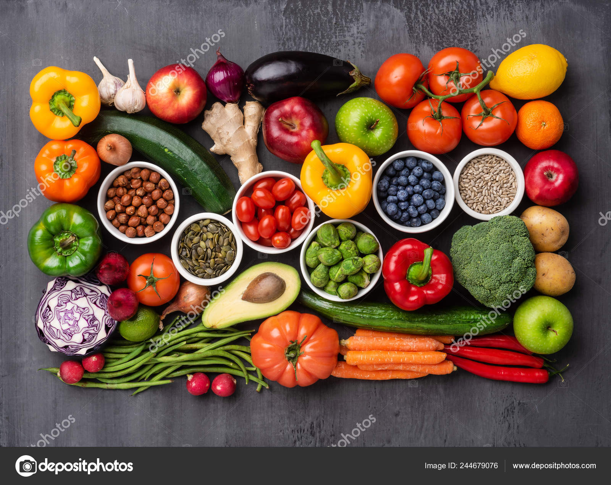
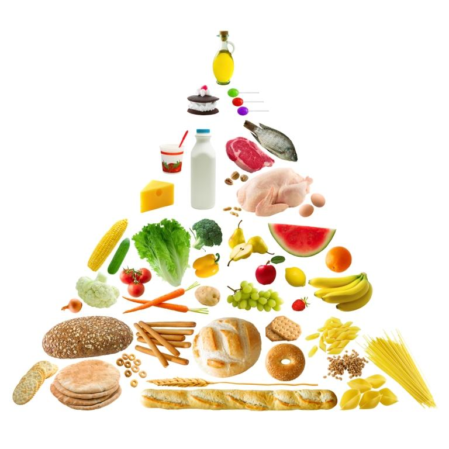
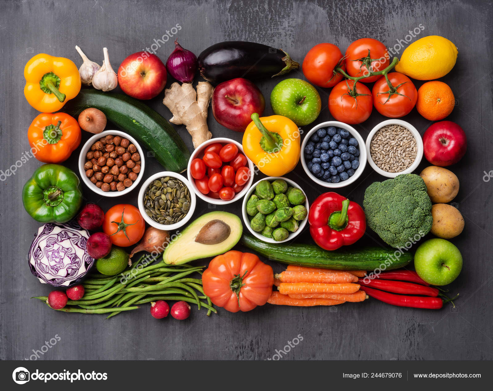
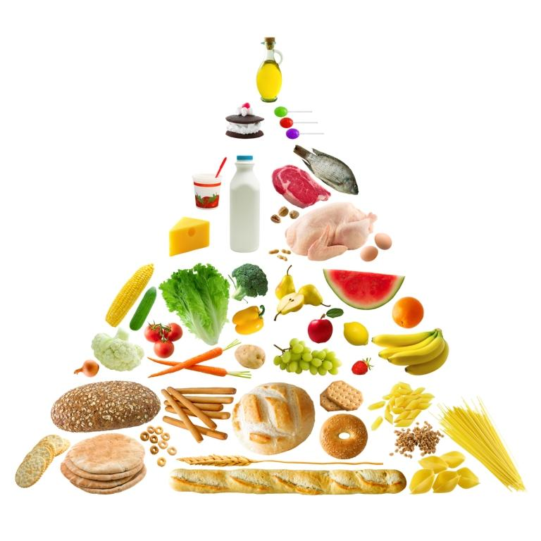

O que é?
O nutricionismo é uma abordagem que valoriza excessivamente a comida e a alimentação, muitas vezes levando a comportamentos obsessivos em relação à dieta e ao corpo. Pode resultar em restrições alimentares extremas e uma visão distorcida da saúde. É importante buscar um equilíbrio saudável na alimentação, sem cair em extremos. Resumindo, o nutricionismo é o foco restrito ao nutriente, sem considerar sua interação com outros nutrientes também presentes e a qualidade do alimento em si. Essa ideia esquece também de observar a combinação entre alimentos e o padrão alimentar. No lugar disso, ele propõe o paradigma da qualidade do alimento a ser consumido, pois não é o nutriente o mais importante para a saúde humana.